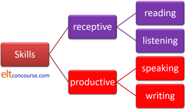

CELTA written assignment: focus on language skill

The purpose of the assignment
The CELTA handbook explains that this assignment allows you to demonstrate that you can:
- correctly use terminology that relates to language skills and subskills
- relate task design to language skills development
- find, select and reference information from one or more sources using written language that is clear, accurate and appropriate to the task
That's a lot to cover in 1000 words so you need to be concise and stay focused. This is not the place to discuss generalities.
 |
The four skills and their subskills |
This is an overview only. For more on skills, go to the initial-plus training section on skills.
The skills look like this:

The 4 main skills can be broken down into subskills (and should be). These include, very briefly and incompletely:
- Reading:
- skimming (reading for general gist)
- scanning (reading to locate details)
- intensive reading (reading for the fullest possible understanding)
- extensive reading (reading to follow the gist or get the general picture)
- Listening:
- listening for relevance (rather like reading for gist)
- monitoring (listening to spot something important)
- intensive listening (trying to understand as much as possible)
- extensive listening (listening to follow the main points of what is being said)
- Speaking:
- interaction (speaking to oil social wheels and maintain relationships with people)
- transaction (speaking to get something done such as getting a service, asking for information, giving an explanation etc.)
- turn-taking (understanding when to speak and when someone else wants to speak)
- long turns (holding the floor, giving presentations etc.)
- Writing:
- brainstorming
- understanding the audience
- planning what to write
- drafting
- revising
- polishing
We may focus on individual subskills but should not lose sight of the fact that people use many of them in combination or that, of course, most speaking also involves listening and much writing involves reading.
 |
Top down and bottom up processing |
For the two receptive skills in particular, the knowledge that we use to understand can, very roughly and very briefly be divided into two sorts:
- Top-down processing uses:
- our knowledge of how a text is structured and where the important information will be
- our knowledge the world around us
- our knowledge the intentions of the writer or speaker
- our ability to predict what will be heard or read
- Bottom-up processing uses our knowledge of:
- the sounds and writing systems of English (phonemes, connected speech phenomena, spelling, punctuation etc.)
- the meaning of the lexis and idioms of the language
- the grammar of the language
- how links are made in texts using pronouns, conjunction and other devices
 |
The structure of the assignment |
Your centre will probably give you a set of instructions for your
assignments. You'd be foolish to ignore these.
What follows is generic advice.
Some centres give you a choice of skills to write about, some may oblige you to focus on two specific ones and some may even give you a free hand.
This assignment is quite broadly based because the regulations
require you to focus on both receptive and productive skills in
relation to a piece of material or text (and for our purposes, the
term 'text' applies to both written and spoken language).
Before you start, review
the
guide to Topic 3 of the CELTA syllabus.
This is in the genre of an Information Report and it has two parts:
- A brief introduction stating the focus
of the assignment and why you think the area is important.
For example,
I have chosen to focus on reading skills using the text in the appendix, specifically on reading skills needed by elementary learners (A1 and A2 level) operating in an English speaking environment because the abilities to extract the gist of what they encounter and decide on its relevance to them are crucial.
I shall also be suggesting ways to use the text as a basis for a lesson on writing a short email to a friend. - Now you need to analyse the sub-skills
required to access the text step by step.
- For example, if you are using the text to practise identifying the topic and reading for gist, you will need to suggest what sorts of activities you would use and, crucially, why.
- Now you need to go on to outline how you would use the text as a stimulus for writing, in our example. You need to say why the text is appropriate, what skills of writing you are targeting and what the outcomes in terms of developing the learners' writing skills are going to be.
- If you have the space, you may like to include a brief conclusion saying why the skill(s) may cause problems for learners. You can also include this in the discussion above, of course.
- For reading
Grellet, F, 1999, Developing Reading Skills, Cambridge: Cambridge University Press
Hudson, T, 2007, Teaching Second Language Reading, Oxford: Oxford University Press - For listening
Field, J, 2008, Listening in the Language Classroom, Cambridge: Cambridge University Press
Wilson, J, 2008, How to Teach Listening, Harlow: Pearson Longman - For writing
Hedge, T, 1990, Writing, Hong Kong: Oxford University Press
Harmer, J, 2011, How to Teach Writing, Malaysia: Pearson Education - For speaking
Bygate, M, 1987, Speaking, Oxford: Oxford University Press
Thornbury, S and Slade, D, 2006, Conversation: From Description to Pedagogy, Cambridge: Cambridge Language Teaching Library
Thornbury, S, 2005, How to Teach Speaking, Harlow: Longman Pearson - For all skills
Hedge, T, 2000, Teaching and Learning in the Language Classroom, Oxford: Oxford University Press
Graphically:

 |
Wait a minute! |
Before you submit your assignment, here's a quick checklist. You can have this as a PDF file by clicking here or you can mentally tick things off on the screen.
- I have chosen a suitably limited area to analyse
- I have made it clear in the introduction and the title what it is
- I have analysed the subskills learners need for the skill in question
- I have linked the analysis of subskills to the activities I suggest to develop each one
- I have said why the skill and its subskills may present problems for learners
Now assess yourself against the criteria for the assignment. Here they are again. Have you been able to:
- correctly use terminology that relates to language skills and subskills
- relate task design to language skills development
- find, select and reference information from one or more sources using written language that is clear, accurate and appropriate to the task
Your tutors will maintain a record of the work you have done on
the written assignments and will grade each of the criteria as
follows: NS (Not to Standard), S (at Standard) or S+ (above
Standard).
You need to aim consistently for S or S+ grades, naturally.
If you have managed to tick all the items, well done. Submit the assignment and move on.
 |
Investigating the skill |
This site is a good place to start but you will also, presumably,
have access to references of one kind or another (see the list
above).
Once you have decided (or been told) which skills you are analysing,
use these links to find what you want on this site:
| Search the whole site | |
| The A-Z index | |
| The initial-plus skills index | |
| The CELTA written assignment guides: | |
| Focus on the learner(s) | Focus on skills |
| Focus on structure | Lessons from the classroom |